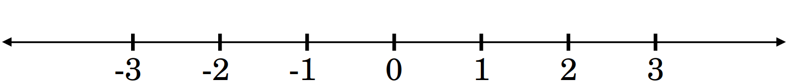
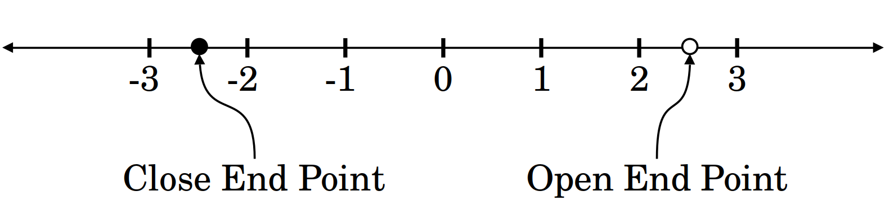
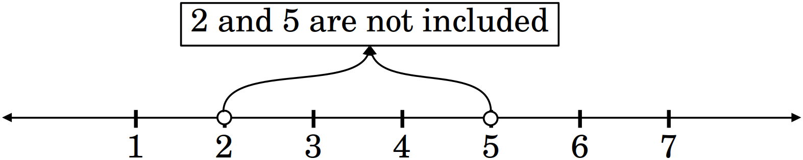
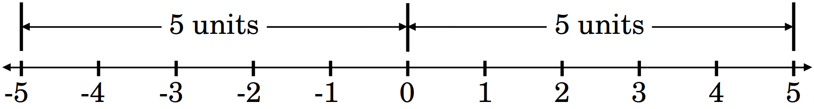

After preparing this topic, you should be able
To represent and interpret intervals and inequalities on the real number line.
To understand absolute value as distance and solve absolute-value equations and inequalities.
To translate distance statements into intervals and use them to understand the language of limits.
Before studying limits, we need a precise language for describing where a variable can be and how close it can get to a particular number.
Intervals and inequalities provide this language.
We study these concepts because they allow us to:
Describe the location of numbers on the real number line
Inequalities and intervals help us clearly identify regions such as (x<4), (x>2), or (2<x<5).
This is essential for describing the values of (x) near a point.
Express whether endpoints are included or excluded
The distinction between (<) and (\leq), and between parentheses ((,)) and brackets ([,]), becomes crucial when discussing open intervals around a number.
Limits frequently consider values near (c) without necessarily allowing (x=c).
Describe the domain and conditions under which functions are studied
Many functions are defined only on certain intervals or under certain inequalities.
Being able to translate between inequalities, interval notation, and the number line prepares us to describe domains, neighborhoods, and the values of (x) used in limits.
The central idea we will soon need is:
To say that (x) is close to (c), we need intervals and inequalities such as the following two statement.
c-\delta<x<c+\delta
x\in(c-\delta,c+\delta).
After learning how inequalities and intervals describe the position of numbers, we now need a way to describe how far one number is from another.
Absolute value provides exactly this idea and creates a direct bridge to limits.
We study absolute value because we need to:
Measure the distance between two numbers
The expression |x-c| represents the distance between (x) and (c).
This gives us a precise mathematical meaning for phrases such as “close to (c)” or “within a certain distance of (c)”.
Describe numbers near a particular point
c-a<x<c+a.
Build the foundation for the precise definition of a limit
The concept of a limit depends on controlling the distance between (x) and (c), and later between (f(x)) and (L).
The expressions |x-c| \lt \delta, |f(x)-L| \lt \varepsilon are at the heart of the formal definition of a limit.
The key idea we are preparing for is:
A limit asks what happens to (f(x)) when (x) gets arbitrarily close to (c).
The phrase “(x) gets close to (c)” can be expressed precisely as
|x-c|<\delta
Therefore, understanding absolute value as distance is not merely an algebraic technique—it gives us the mathematical language needed to make the intuitive idea of closeness precise in calculus.
We study distance as the language of limits because:
Make the idea of “closeness” precise
In everyday language, “close to (c)” is vague.
The expression |x-c| \lt \delta gives a precise mathematical meaning: (x) is less than (\delta) units away from (c).
This allows us to replace informal descriptions with exact conditions.
Understand what “approaching” means in a limit
When we write x\to c, (x) gets closer and closer to (c), but (x) does not have to equal (c).
The condition 0 \lt |x-c| \lt \delta captures this idea precisely and introduces the concept of a deleted neighborhood.
Build the foundation for the formal definition of a limit
|x-c| \to \text{(input distance)}
|f(x)-L| \to \text{(output distance)}
Understanding these distances prepares us to understand the precise statement that making (x) sufficiently close to (c) makes (f(x)) sufficiently close to (L).
0<|x-c|<\delta \quad\Longrightarrow\quad |f(x)-L|<\varepsilon
In words, If (x) is sufficiently close to (c), but not
equal to (c), then (f(x)) is sufficiently close to
(L).
Thus, this objective forms the bridge between the elementary concepts of intervals, inequalities, and distance and the formal mathematical definition of a limit.

Figure 1. The real number line.
Moving to the right means numbers become larger.
Moving to the left means numbers become smaller.
For example, -2 \lt 3 because -2 lies to the left of 3.
An inequality compares two quantities.
The four basic symbols are:
\lt\;\;\;\Longrightarrow\;\;\;Less then symbol
\gt\;\;\;\Longrightarrow\;\;\;Greater then symbol
\leq\;\;\;\Longrightarrow\;\;\;Less than or equal to symbol
\geq\;\;\;\Longrightarrow\;\;\;Greater than or equal to symbol
For example, x \lt 4 means x is somewhere to the left of 4.
Similarly, x \gt 4 means x is somewhere to the right of 4.
Consider x<4.
The number 4 is not included.
We represent this using an open endpoint \circ.
But, x \leq 4 includes 4, so we use a filled endpoint \bullet.

Figure 2. Open and close end points on number line.
An interval is a set of real numbers between two endpoints.
For example, 2 \lt x \lt 5 means all numbers between 2 and 5.
In interval notation (2,5), the parentheses mean that 2 and 5 are not included.

Figure 3. Representation of (2,5) on real number line.
Open interval a \lt x \lt b becomes (a,b).
Closed interval a \leq x \leq b becomes [a,b].
Left-closed, right-open a \leq x \lt b becomes [a,b).
Left-open, right-closed a \lt x \leq b becomes (a,b].
For x \gt 3, we write (3,\infty).
For x \leq 3, we write (−\infty,3].
Remember that \infty is not a real number, so we always use a parenthesis with infinity.
Write −2 \lt x \lt 4 in interval notation.
The endpoints are both excluded. Therefore, \boxed{x \in (−2,4)}
Write [−3,5) as an inequality.
The square bracket at −3 means included, so
x \geq −3
The parenthesis at 5 means excluded, so
x \lt 5
Therefore,
\boxed{−3 \leq x \lt 5}
Solve
3x−2 \lt 10
Adding 2 to both sides, we get
3x \lt 12
Dividing both sides of above inequality by 3, we get
x \lt 4
Therefore,
\boxed{x\in(−\infty,4)}
Solve
−2x+3 \lt 7
Subtracting 3 from both sides of the given inequality, we get
−2x \lt 4
Dividing both sides of above inequality by −2, we get
x \gt -2
Therefore,
\boxed{x \in (−2,\infty)}
Multiplication or division by a negative number reverses the inequality.
Solve
2 \lt 3x−1 \lt 8
Adding 1 to all three parts of the above inequality, we get
3 \lt 3x \lt 9
Dividing all parts of above inequality by 3, we get
1 \lt x \lt 3
Therefore,
\boxed{x \in (1,3)}
Express the inequality
−4 \leq x \lt 3
in interval notation.
Solve
−3x+6 \geq 12
and express your answer in interval notation.
Now we move from order to distance.
This is where the material becomes directly connected to limits.
The absolute value of a number is its distance from zero.
For example, ∣5∣=5 because 5 is 5 units from zero.
Also, ∣−5∣=5 because −5 is also 5 units from zero.

Figure 4. Absolute value as distance from 0.
Therefore,
∣x∣ \geq 0
The distance between x and c is ∣x−c∣.
For example, the distance between x=3 and c=7 is
∣3−7|=∣−4∣=4=|7-3|
The distance between x=9 and c=7 is
∣9−7∣=2=|7-9|
Thus,
∣x−c∣= \text{distance from } x \text{ to } c
Consider ∣x∣=3.
Which numbers are exactly 3 units from zero?
The numbers x=3 and x=−3 are exactly 3 units from zero.
Therefore,
\boxed{∣x∣=3 \iff x=\pm3}
Solve
∣x−4∣=2
The equality |x-4|=2 means x is exactly 2 units from 4.
Therefore,
x−4=2 \qquad \text{or} \qquad x−4=−2
Thus,
x=6 \qquad \text{or} \qquad x=2
Hence,
\boxed{x=2,6}
∣x∣ \lt 3
This means the distance of x from zero is less than 3.
Therefore x must lie between −3 and 3, i.e.,
−3 \lt x \lt 3
∣x∣ \lt 3 \iff −3 \lt x \lt 3
∣x∣ \lt a \iff −a \lt x \lt a
∣x−c∣ \lt a \iff c−a \lt x \lt c+a
Solve
∣x−5∣ \lt 2
Write the equivalent compound inequality
−2 \lt x−5 \lt 2
3 \lt x \lt 7
Therefore,
\boxed{x \in (3,7)}
∣x−5∣ \lt 2 means x is within 2 units of 5. So the interval is (5−2,5+2)=(3,7).
Consider ∣x∣ \gt 3.
This means x is more than 3 units away from zero.
Therefore, x must be outside the interval [−3,3].
It means x \lt −3 or x \gt 3.
Hence,
∣x∣ \gt 3 \iff x \lt −3 \text{ or } x \gt 3
∣x∣ \lt a \rightarrow \text{Between} \qquad ∣x∣ \gt a \rightarrow \text{Outside}
Solve
∣x−2∣ \gt 4
We have two possibilities
x−2 \lt −4 \qquad \text{or} \qquad x−2 \gt 4
Therefore,
x \lt −2 \qquad \text{or} \qquad x \gt 6
Hence,
\boxed{x \in (−\infty,−2)∪(6,\infty)}
Consider
∣2x−8∣ \lt 2
We write
−2 \lt 2x−8 \lt 2
Adding 8 to all parts of above expression
6 \lt 2x \lt 10
Dividing all parts of above expression by 2
3 \lt x \lt 5
Therefore,
\boxed{x \in (3,5)}
Or, equivalently,
\boxed{∣x−4∣ \lt 1}
This last form is particularly important because it says, x is within 1 unit of 4
. That is precisely the idea needed for
limits.
Solve
∣x−3∣ \lt 4
Solve
∣2x+4∣ \leq 6
Now we connect everything.
This is the most important objective of the lecture.
Suppose we say, x is close to
c
.
Mathematically, we need to specify how close.
Suppose we choose a positive number \delta, such that
|x-c| \lt \delta
Then x is less than \delta units away from c.
Using our absolute-value rule
-\delta \lt x-c \lt \delta
Add c to all parts.
c-\delta \lt x \lt c+\delta
Therefore,
\boxed{|x-c| \lt \delta \iff c-\delta \lt x \lt c+\delta}
And in interval notation, we can write
\boxed{|x-c| \lt \delta \iff x \in (c-\delta,c+\delta)}
The interval (c-\delta,c+\delta) is centered at c.
Its radius is \delta.
For example, let
c=4,\qquad\delta=1
Then (c-\delta,c+\delta) becomes (3,5).
Thus,
|x-4| \lt 1
3 \lt x \lt 5
Rewrite
|x-6| \lt 0.5
as an interval.
Using |x-c| \lt \delta \iff c-\delta \lt x \lt c+\delta, we get
6-0.5 \lt x \lt 6+0.5
Therefore,
\boxed{5.5 \lt x \lt 6.5}
Or,
\boxed{x \in (5.5,6.5)}
When we write x\to c$, we mean that x gets closer and closer to c.
But in a limit, x is not required to equal c.
Therefore we use
0 \lt |x-c| \lt \delta
The condition |x-c| \lt \delta puts x inside the neighborhood.
The condition 0 \lt |x-c| removes the point x=c.
Thus, 0 \lt |x-c| \lt \delta means, x is within \delta units of c, but x\ne c.
The interval (c-\delta,c+\delta) contains c.
But 0 \lt |x-c| \lt \delta excludes c.
Therefore, (c-\delta,c)\cup(c,c+\delta) is the corresponding deleted neighborhood.
This distinction is important because the definition of a limit specifically uses the following expression
0 \lt |x-c| \lt \delta
Sometimes we approach c only from one side.
From the right
x \gt c
c<x<c+\delta
x \lt c
c-\delta \lt x \lt c
Let
c=3,\qquad\delta=0.2
Describe the points within 0.2 units of 3, from the right.
We need
3 \lt x \lt 3.2
Therefore,
x \in (3,3.2)
Let
c=3,\qquad\delta=0.2
Describe the points within 0.2 units of 3, from the left.
We need
2.8 \lt x \lt 3
Therefore,
x \in (2.8,3)
Now we reach the exact idea that motivates the precise definition of a limit.
Suppose
f(x)=2x-1
We want f(x) to be within 2 units of 7.
We write |f(x)-7| \lt 2.
Substitution of f(x) in the above inequality gives
|2x-1-7| \lt 2
|2x-8| \lt 2
From Objective 2, 3 \lt x \lt 5.
So we have discovered
|f(x)-7| \lt 2 \quad\text{whenever}\quad 3 \lt x \lt 5
|f(x)-7| \lt 2 \quad\text{whenever}\quad |x-4| \lt 1
The distance |f(x)-L| measures how far f(x) is from L.
For a limit, x \to c means we control |x-c|.
And we want this to force |f(x)-L| to become small.
|f(x)-L| \lt \epsilon \quad\text{whenever}\quad 0 \lt |x-c| \lt \delta
We are not proving this definition yet.
We are simply understanding its language.
The expression 0 \lt |x-c| \lt \delta means x is close to c, but x \ne c.
The expression |f(x)-L| \lt \epsilon means f(x) is close to L.
The PDF introduces exactly this definition after motivating the need to replace the vague phrase “gets arbitrarily close” with precise conditions.
Suppose
|x-5| \lt 0.1
What interval contains x?
Using |x-c| \lt \delta \iff c-\delta \lt x \lt c+\delta, we have 5-0.1 \lt x \lt 5+0.1.
Therefore,
\boxed{4.9 \lt x \lt 5.1}
Or,
\boxed{x \in (4.9,5.1)}
Suppose
0 \lt |x-5| \lt 0.1
Find the interval in which x exists.
Then
4.9 \lt x \lt 5.1
but
x \ne 5
Therefore,
\boxed{x \in (4.9,5)\cup(5,5.1)}
This is exactly the type of input restriction used in the precise definition of a limit.
Suppose x must remain inside (2,10) and we want a symmetric interval around 5
(5-\delta,5+\delta)
How large can \delta be?
Distance from 5 to the left endpoint
5-2=3
Distance from 5 to the right endpoint
10-5=5
The nearer endpoint is 2.
Therefore,
\boxed{\delta=3}
This is the largest possible symmetric radius.
Then
(5-3,5+3)=(2,8)
Thus,
(2,8)\subset(2,10)
This idea will also be used in limits.
Rewrite
|x-4| \lt 0.2
as an interval.
If
0 \lt |x-3| \lt 0.5
Describe the corresponding interval(s) for x.
Today we built the mathematical language needed for limits.
We learned how to describe regions of the real number line
\boxed{a \lt x \lt b \iff x \in (a,b)}
We also learned how to solve inequalities and remember,
multiplying or dividing by a negative reverses the
inequality
.
The most important interpretation is
\boxed{|x-c|=\text{distance between }x\text{ and }c}
Therefore, |x-c| \lt a means that x lies within a units of c.
Equivalently,
\boxed{|x-c| \lt a \iff c-a \lt x \lt c+a}
\boxed{|x-c| \lt \delta \iff c-\delta \lt x \lt c+\delta}
\boxed{|x-c| \lt \delta \iff x\in(c-\delta,c+\delta)}
\boxed{ x\in(c-\delta,c)\cup(c,c+\delta)}
\boxed{ 0 \lt |x-c| \lt \delta \quad\Longrightarrow\quad |f(x)-L| \lt \epsilon }
In words,
If x is sufficiently close to c, but not equal to c, then f(x) is as close to L as we want.
That is why intervals, inequalities, and absolute values are the essential prerequisites for understanding the precise definition of a limit.
This is your lucky day, we don’t have exercises. But, you need to solve all the examples with their logical understanding. If you understand limits, you will be able to understand continuity. And, if you understand continuity, you will be able to understand logical understanding of the derivatives.